2.3 Redox Chemistry - Acid-Base Titrations
Oxidation numbers, ionic equations, disproportionation and titration calculations
2.3 Redox Chemistry - Acid-Base Titrations
本页对应 2.3 Redox Chemistry - Acid-Base Titrations.pdf.pdf。内容覆盖 oxidation numbers、redox agents、disproportionation、ionic equations，以及 acid-base titration indicators 和 concentration calculations。专业词汇保留 English。
Learning objectives
学完本页后，你应该能够：
- assign oxidation numbers using a consistent set of rules；
- identify oxidation、reduction、oxidising agents and reducing agents；
- balance redox reactions using oxidation-number changes or half equations；
- recognise and balance disproportionation reactions；
- construct ionic equations in acidic conditions；
- choose an acid-base indicator and calculate unknown concentration from titration data。
2.3.1 Oxidation numbers
Oxidation and reduction definitions
Oxidation / reduction 可以用不同 language 表示：
| Oxidation | Reduction |
|---|---|
| addition of oxygen | loss of oxygen |
| loss of hydrogen | addition of hydrogen |
| loss of electrons | gain of electrons |
| increase in oxidation number | decrease in oxidation number |
最适合 redox equations 的 definition 是 electron transfer：
- oxidation = loss of electrons；
- reduction = gain of electrons。
记忆法：OIL RIG = Oxidation Is Loss，Reduction Is Gain。
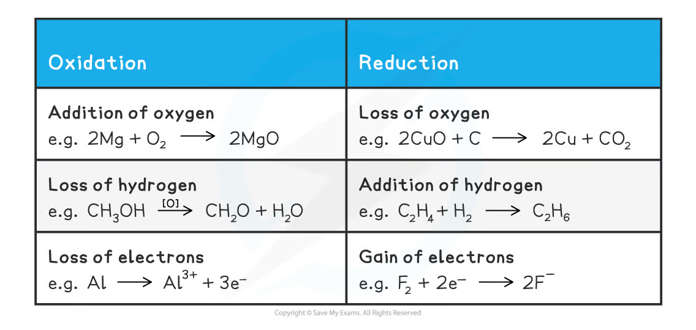
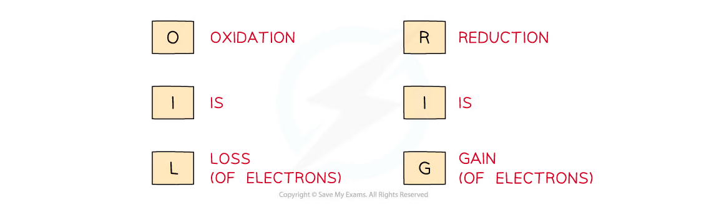
Meaning of oxidation number
Oxidation number 是 the charge that would exist on an atom if all bonding were treated as completely ionic。它是 a bookkeeping tool，不一定等于 real ionic charge。
Oxidation numbers 用来：
- decide whether oxidation or reduction has occurred；
- identify which species has been oxidised / reduced；
- identify oxidising and reducing agents；
- construct half equations and balance redox equations；
- name compounds containing elements with variable oxidation numbers。
Rules for assigning oxidation numbers
- An uncombined element has oxidation number
0：Na(s)、O₂(g)、Cl₂(g)。 - A monoatomic ion has oxidation number equal to its charge：
Mg²⁺ = +2，Cl⁻ = -1。 - Group 1 metals are usually
+1，Group 2 metals are usually+2。 - Fluorine is
-1in its compounds。 - Hydrogen is usually
+1，but is-1in metal hydrides such asNaH。 - Oxygen is usually
-2，but is-1in peroxides such asH₂O₂and positive inOF₂。 - The sum of oxidation numbers in a neutral compound is
0。 - The sum in a polyatomic ion equals the ion charge。
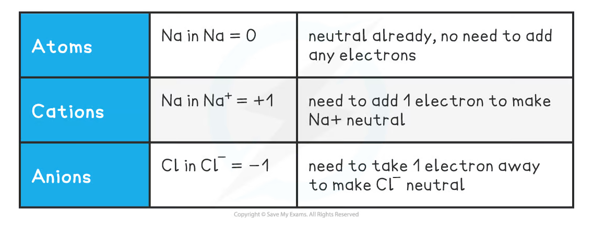
Worked examples
对 CO₂：oxygen 为 -2，neutral molecule 的 total 为 0，所以：
\[ x+2(-2)=0 \quad\Rightarrow\quad x=+4 \]
对 NO₃⁻：
\[ x+3(-2)=-1 \quad\Rightarrow\quad x=+5 \]
对 S₂O₃^{2-}：
\[ 2x+3(-2)=-2 \quad\Rightarrow\quad x=+2 \]
这里的 +2 是 the average oxidation number of sulfur atoms；two sulfur atoms may occupy different chemical environments。
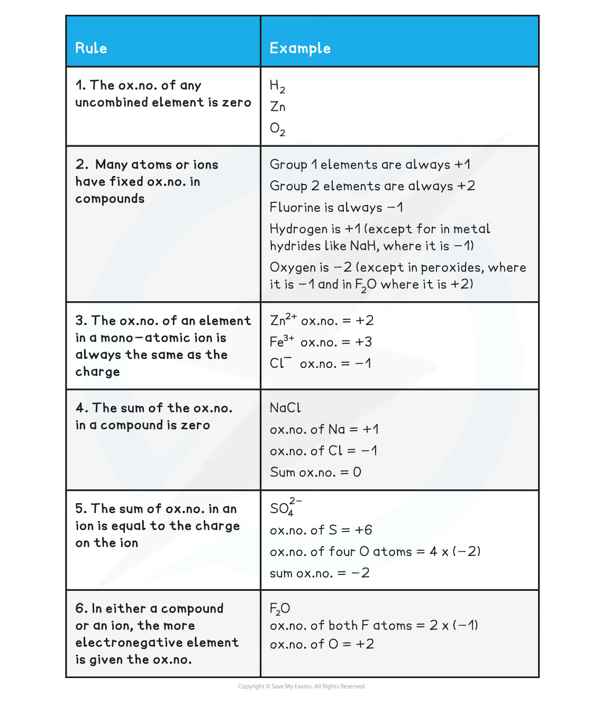
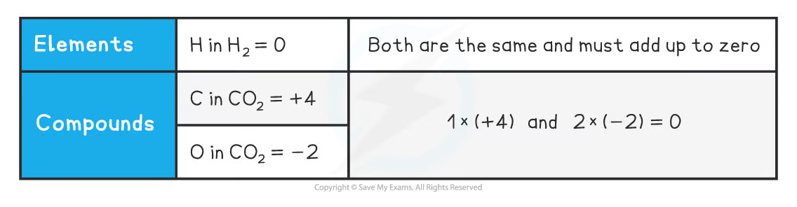
Stock notation
Transition metals 常有 variable oxidation numbers，因此 compound name 可以用 Roman numeral 表示 oxidation number：
FeO：iron(II) oxide；Fe₂O₃：iron(III) oxide；KMnO₄：potassium manganate(VII)；K₂Cr₂O₇：potassium dichromate(VI)。
例如 MnO₄⁻ 中 four oxygen atoms contribute 4(-2)=-8，ion overall charge 为 -1，所以 manganese 必须为 +7。
2.3.2 Oxidation, reduction and redox agents
Identify the changes
在 reaction 中比较 reactants 和 products 的 oxidation numbers：
- oxidation number increases → that species is oxidised；
- oxidation number decreases → that species is reduced。
例如：
\[ \ce{2NH3 + 3Br2 -> N2 + 6HBr} \]
Nitrogen 从 -3 变为 0，因此 nitrogen is oxidised。Bromine 从 0 变为 -1，因此 bromine is reduced。
Oxidising and reducing agents
Oxidising agent 会使 another species lose electrons；它自己 gains electrons and is reduced，oxidation number decreases。
Reducing agent 会使 another species gain electrons；它自己 loses / donates electrons and is oxidised，oxidation number increases。
一条 redox reaction 必须同时包含 oxidising agent 和 reducing agent。某些 species 可以在不同 reaction conditions 下扮演 either role。
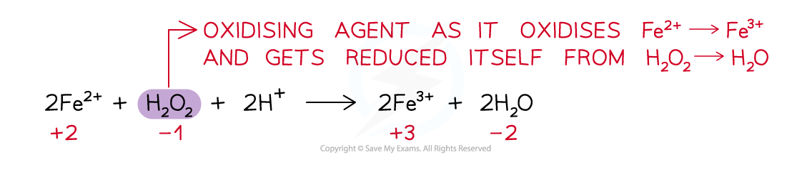
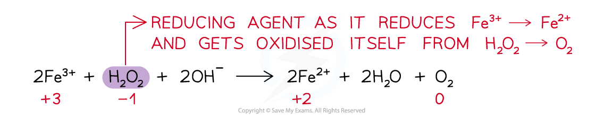
2.3.3 Disproportionation reactions
Definition
Disproportionation 是 a reaction in which the same species is simultaneously oxidised and reduced。也就是说，same element in the same starting species ends up in two different oxidation states。
例如 chlorine 与 water：
\[ \ce{Cl2 + H2O <=> HCl + HClO} \]
Chlorine 一部分从 0 降到 -1，另一部分从 0 升到 +1，所以 Cl₂ has been disproportionated。
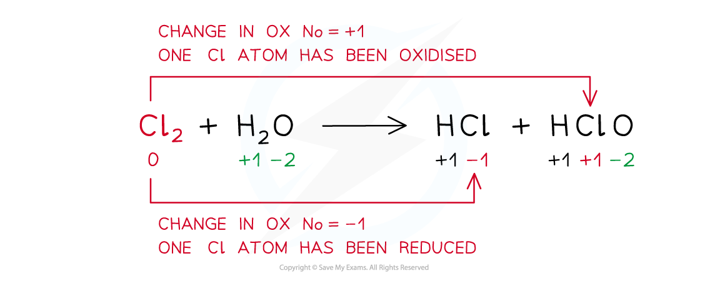
Balancing disproportionation in alkaline solution
Hot concentrated aqueous sodium hydroxide 中：
\[ \ce{Cl2 + OH- -> Cl- + ClO3- + H2O} \]
Method：
- identify oxidation-number changes；
- multiply species so total increase equals total decrease；
- balance charge using
OH⁻in alkaline conditions； - balance O and H using water；
- check atoms and total charge。
最终 equation：
\[ \ce{3Cl2 + 6OH- -> 5Cl- + ClO3- + 3H2O} \]
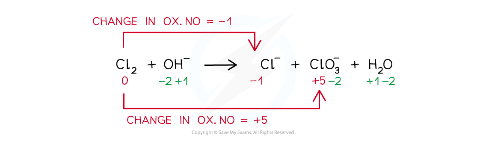
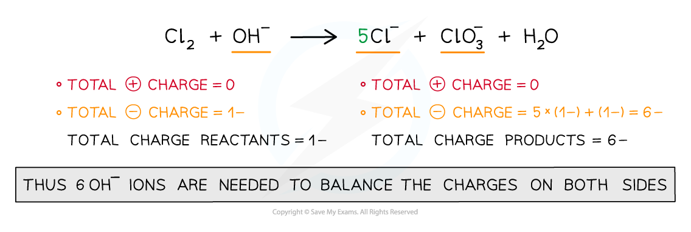
2.3.4 Ionic equations
Half equations
Half equation 只表示 redox reaction 的 one electron-transfer half：
\[ \ce{Fe^{2+} -> Fe^{3+} + e-} \]
\[ \ce{Br2 + 2e- -> 2Br-} \]
复杂 half equation 在 acidic conditions 中按以下顺序 balance：
- balance the element being oxidised / reduced；
- add
H₂Oto balance oxygen； - add
H⁺to balance hydrogen； - add electrons to balance charge。
Worked example: dichromate and iron(II)
Reduction half equation：
\[ \ce{Cr2O7^{2-} + 14H+ + 6e- -> 2Cr^{3+} + 7H2O} \]
Oxidation half equation：
\[ \ce{Fe^{2+} -> Fe^{3+} + e-} \]
Multiply the iron half equation by 6，then add and cancel electrons：
\[ \ce{Cr2O7^{2-} + 14H+ + 6Fe^{2+} -> 2Cr^{3+} + 7H2O + 6Fe^{3+}} \]
Oxidation-number method
For some equations，直接用 oxidation-number changes 更快：
\[ \ce{MnO4- + 5Fe^{2+} + 8H+ -> Mn^{2+} + 5Fe^{3+} + 4H2O} \]
Mn 从 +7 降到 +2，每个 Mn gain 5e⁻；每个 Fe 从 +2 升到 +3，loss 1e⁻，所以需要 5Fe²⁺。
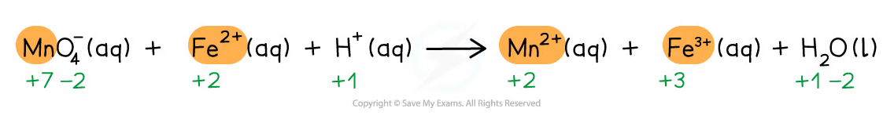
检查方法：
- atoms balanced；
- total charge balanced；
- electrons no longer appear in full ionic equation；
- acidic equation 中只使用
H⁺、H₂Oand relevant ions。
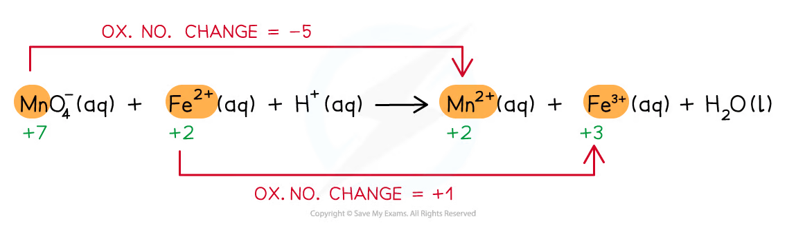
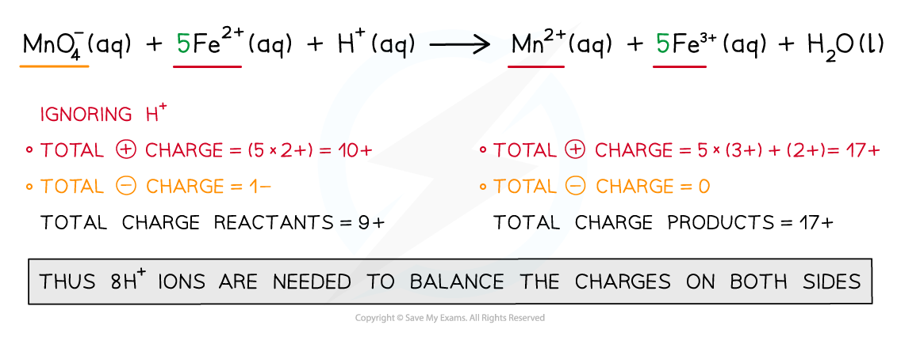
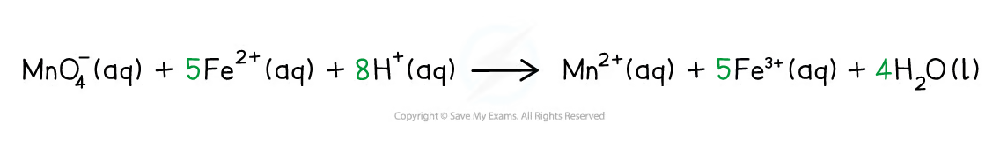
2.3.5 Acid-base titrations with indicators
Purpose of an acid-base titration
Acid-base titration 用已知 concentration 的 solution 测定 unknown acid / alkali concentration。Titrant 从 burette 加入 analyte，直到达到 equivalence point，即 acid 与 base 按 balanced equation 完全反应的 point。
Acid-base indicators 是 weak acids / bases；它们的 conjugate acid 和 conjugate base 具有 different colours。Indicator colour 会随 H⁺ concentration reversible change。
| Indicator | Colour in acid | Colour in alkali |
|---|---|---|
| Litmus | pink / red | blue |
| Methyl orange | red | yellow |
| Phenolphthalein | colourless | pink |
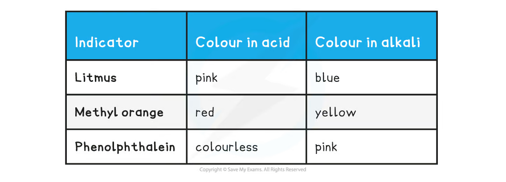
Indicator selection
Good indicator 的 colour transition range 必须 overlap the steep pH change near equivalence point。Indicator 的 end point 应尽量接近 equivalence point。
- strong acid + strong base：methyl orange or phenolphthalein 都可；
- strong acid + weak base：methyl orange usually better；
- weak acid + strong base：phenolphthalein usually better；
- weak acid + weak base：没有 sufficiently sharp colour change，indicator titration 不理想。
Endpoint 观察时，加入 indicator 后应逐滴加入 titrant，接近 endpoint 时充分 swirl；记录 first permanent colour change，避免 overshoot。
Concentration equations
Concentration：
\[ c = \frac{n}{V} \]
其中 c 单位为 mol dm⁻³，n 为 moles，V 必须用 dm³。
因此：
\[ n=cV \]
\[ \text{mass}=nM_r \]
单位转换：
\[ V(\mathrm{dm^3})=\frac{V(\mathrm{cm^3})}{1000} \]
Worked example: sodium carbonate and hydrochloric acid
25.0 cm³ of 0.0500 mol dm⁻³ Na₂CO₃ is neutralised by 20.00 cm³ HCl。
Balanced equation：
\[ \ce{Na2CO3 + 2HCl -> 2NaCl + H2O + CO2} \]
Step 1：convert sodium carbonate volume：
\[ V=25.0/1000=0.0250\ \mathrm{dm^3} \]
Step 2：calculate moles of sodium carbonate：
\[ n(\ce{Na2CO3})=0.0500\times0.0250=0.00125\ \mathrm{mol} \]
Step 3：use the 1:2 stoichiometric ratio：
\[ n(\ce{HCl})=2\times0.00125=0.00250\ \mathrm{mol} \]
Step 4：convert HCl volume and calculate concentration：
\[ c(\ce{HCl})=\frac{0.00250}{0.02000}=0.125\ \mathrm{mol\ dm^{-3}} \]
Titration calculation checklist
- write a balanced chemical equation；
- convert all
cm³volumes todm³； - calculate moles of the known solution using
n=cV； - apply the equation stoichiometry；
- calculate unknown concentration or mass；
- report sensible significant figures based on burette and pipette data。
Exam checklist
Source note
本页内容来自项目内的 Note per Chapter/Note per Chapter/2.3 Redox Chemistry - Acid-Base Titrations.pdf.pdf。PDF 中的 redox diagrams、ionic-equation steps、indicator table 和 calculation formulae 已独立提取并统一处理为 white-background PNG，存放在 assets/notes/2-3-redox-titrations/。